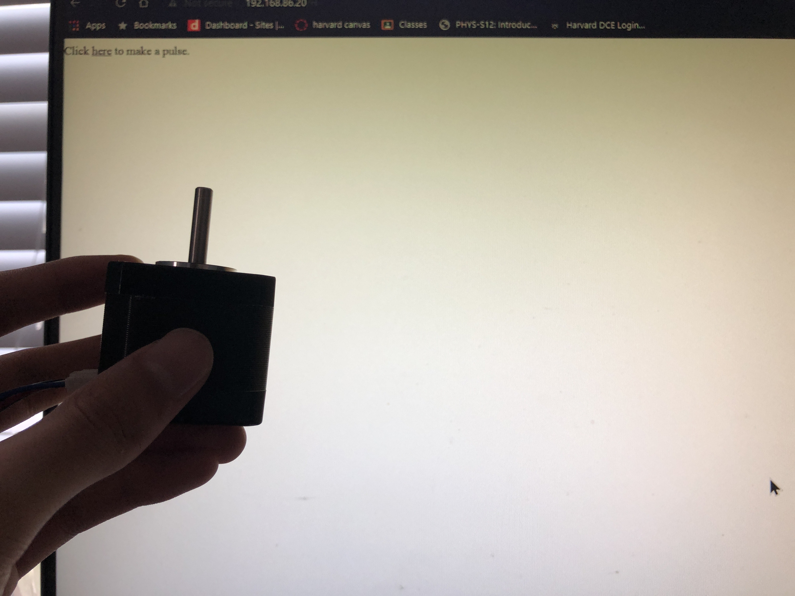

I set up the stepper motor (finally), so I just tried out the two codes listed on the bottom and that seemed to work.
To allow me to actually use my computer or phone, I just used the basic SimpleWifiServer to make it make a pulse when I press a button. It's pretty basic but I was kind of struggling to figure out the stepper motor but that's ok. Here's the code, as always you will need to put your own wifi information and do note that this is just the LAN server and not the firebase.
